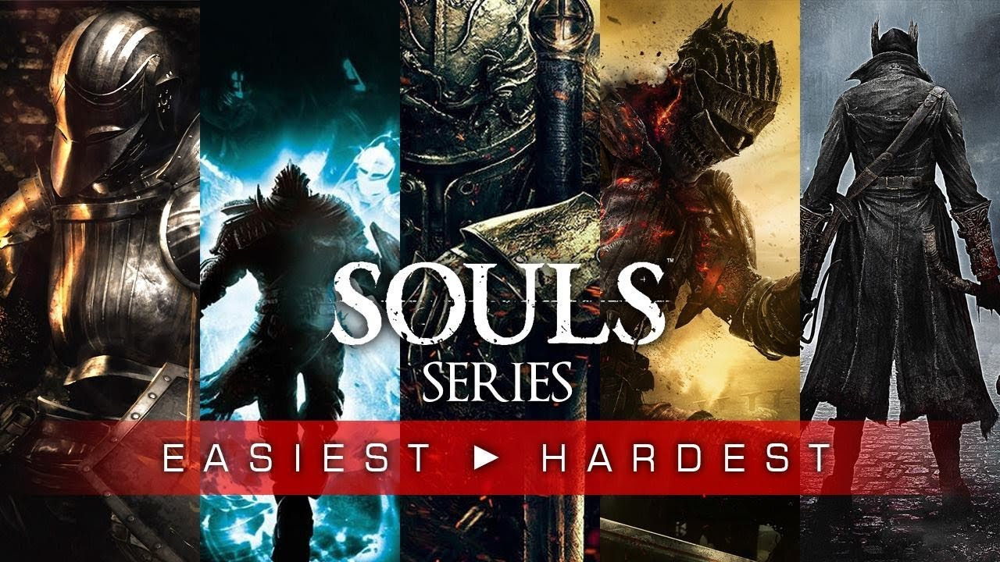
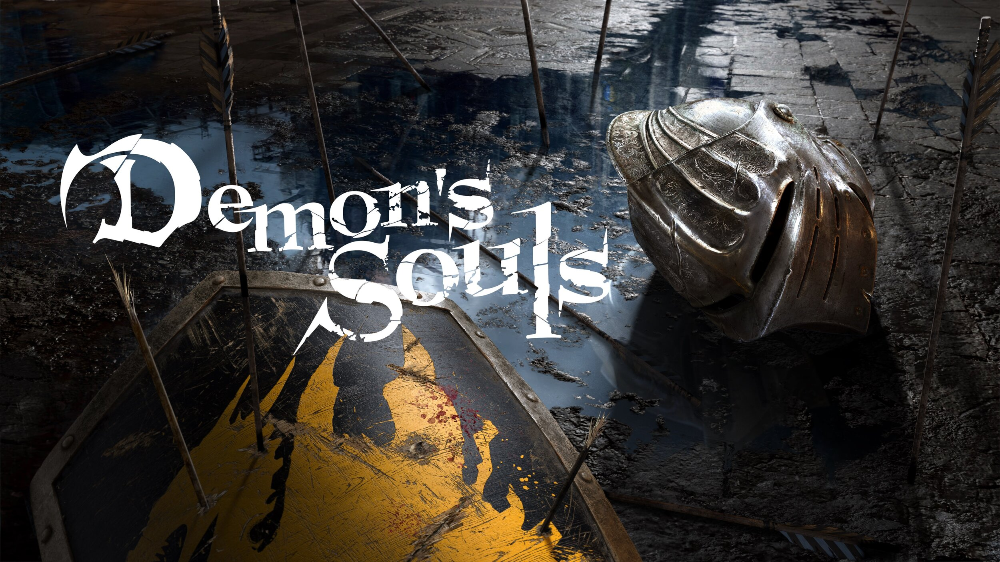
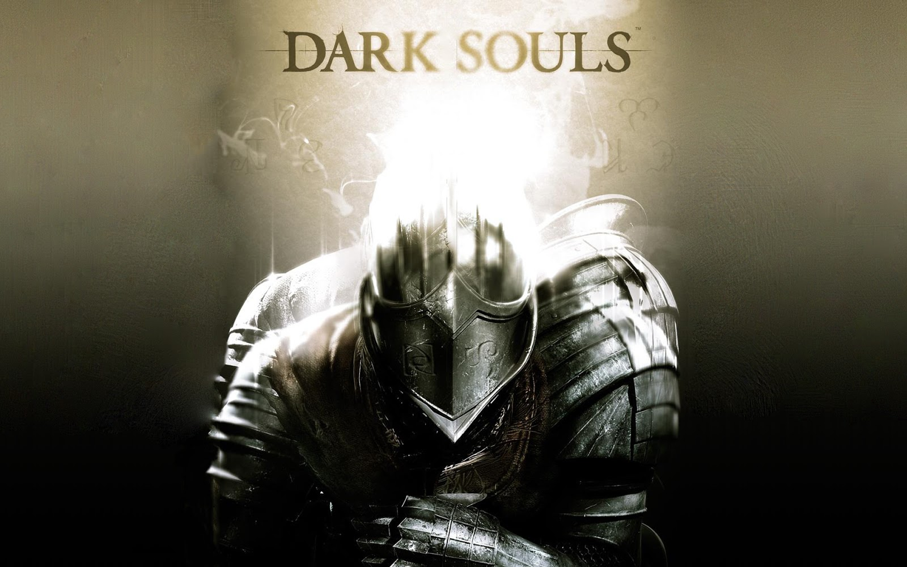
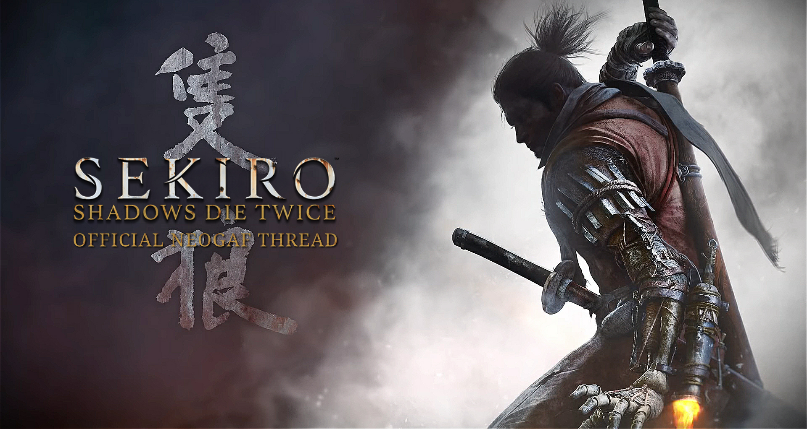
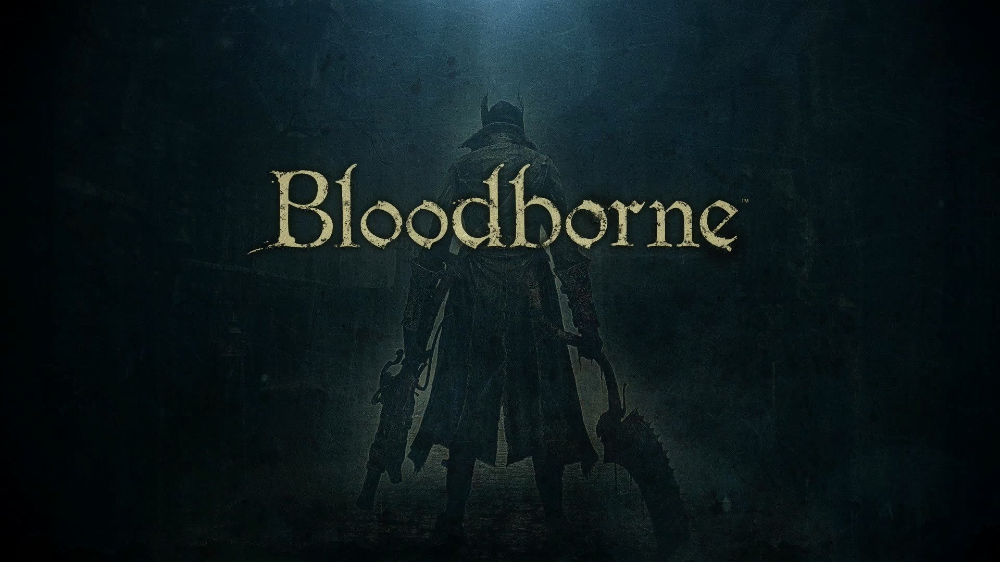
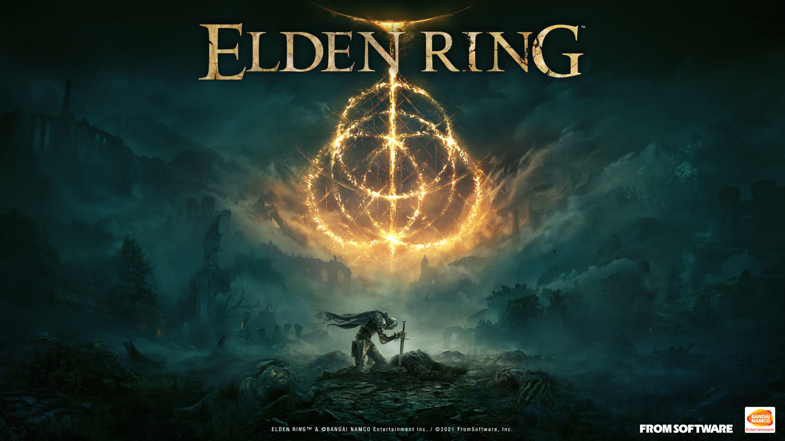
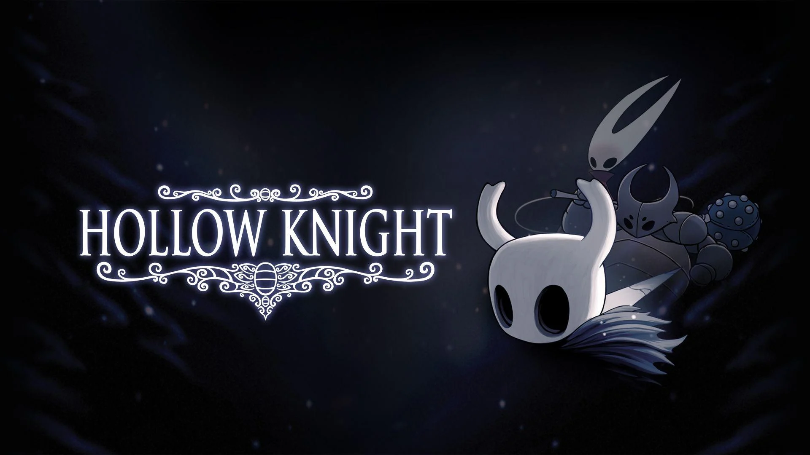

|  | Souls is a type of game genre that consists of RPG games widely known in the gaming community for their difficulty. FromSoftware is a Japanese video game development and publishing company responsible for the souls games. This genre includes a variety of games from the well recieved Dark Souls trilogy to the 2022 game of the year, Elden Ring. The name of this genre is due to the Dark Souls series which all started in the year 2009-2011 with the release of Demon's Souls, the precursor to Dark Souls, and the original Darks Souls. These two games introduced a mechanic unique to the souls games |
Demon's Souls, first released on Playstation 3 platforms exclusively in 2009, as mentioned before is the precursor to Dark Souls, kickstarting the Dark Souls trilogy. Demon's Souls set place in a western like style and follows a generic story of evil unleashed. This game introduces the basic mechanics for all souls games from the fighting to the upgrade system. This game as it is a couple generations old lacks in every area compared to the others however one can truly tell that it paved way for the souls genre. As if being an experimental game to see the reaction of the gaming community, Demon's Souls feels like the beta verzion for the original Dark Souls. The graphics were quite decent for its time and were for the most part consistent throughout although it sure is not near to the experience of the other souls games which came out years later. Approximately 14 years after its original release, Demon Souls makes a return to the big screen with its remastered version exclusively on Playstation 5 in 2020. Strange as it may seem the remastered verzion of Demon's Souls plays identical to the original and to sum that is great and to others a dissapointment, however, what isn't identical and should be expected is the highly improved graphics which are in my opinion of par with Elden Ring's. The remastered brings about a immersively beautiful environment as well as improved sounds, moves, and animation. Although they are fundamentably the same, the 2020 version would take the prize as it is exactly the same as the original yet visually and aesthetically better. This is to be expected as the remastered Demon's Souls is exclusive to Playstation 5 the new generational console unlike the original that was exclusive to the Playstation 3 and could be emulated. |
 |
|  | The Dark Souls series is the more well known of the souls genre and consists of three great games, Dark Souls, Dark Souls 2, and Dark Souls 3. This trilogy began with the release of Dark Souls and later on continued with the release of Dark Souls 2 in 2014. This series was well recieved and continued to develope with the release of Dark Souls 3 in 2015. Although the series hadn't seen a new game in years it was recieved with a remastered version of the original Dark Souls in 2018 which up to now lives up to a great standard. Dark Souls followed the mechanics of Demon's Souls and expanded on them. The Dark Souls series brings about a new genre which throughout the gaming community is known for its mechanics and difficulty. Although they all seem to share the same gameplay FromSoftware developed Dark Souls 2 differently when trying to make it more original, introducing variously new |
Sekiro, debatebly known as the hardest of the souls games, is a a 2019 action-adventure game developed by FromSoftware and released for the PlayStation 4, Windows and Xbox One. |
 |
|  | Bloodborne, it is essentially to Dark Souls 3 what Demon's Souls was to Dark Souls. Some people might reffer to Dark Souls 3 as a copy of it however it couldn't be the case because they are from the same company, sure they may be similar and to some it might seem like lazy development but it is this way because that what the fans like. Bloodborne similar to Demon's Souls is a stand alone game relased for blank plataforms in blank. This game shares similar upgrade and fighting mechanics yet introduces a weapon never seen in the other games, a gun. Essentially this game holds its own but the graphics are, of course, not the greatest considering its age. |
Known as the game of the year for 2022, Elden Ring, is a phenomenal game that takes what all other souls games did and multiplied it by 100. Like others it is a third person role-playing game but unlike the rest it gives you free reign to explore the magnificent world that is the Lands Between. Elden Ring is truly deserving of the title "Game of the Year". |
 |
|  | Although not developed by FromSoftware, the company that developed all other Souls games, Hollow Knight is just as difficult and for that it's considered of the Souls genre. |